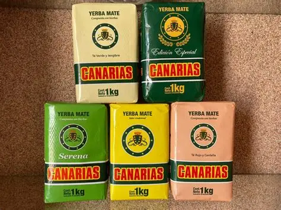

Tradicional
Baldo 1 kg
Perfil clásico equilibrado para la cebada de todos los días.
Encontrá yerbas seleccionadas y marcas populares para disfrutar el mate de todos los días con sabor, calidad y tradición argentina.
TRAMATE nace para acompañar a quienes disfrutan tomar mate todos los días. Ofrecemos distintas variedades y marcas para que cada persona pueda encontrar una yerba acorde a sus gustos.
“Un buen mate empieza con una buena yerba.”
Conocer servicios
Algunas de las variedades que podés encontrar en nuestra propuesta.
Perfil clásico equilibrado para la cebada de todos los días.

Sabor suave y duradero, libre de palo en molienda fina.

Una yerba reconocida por su cuerpo e intensidad.

Selección superior para mates con buena durabilidad.
El mate acompaña encuentros y momentos cotidianos.

Encontrá una variedad que se adapte a tu forma de tomar mate.

Tradición Matera: calidad para cada cebada.